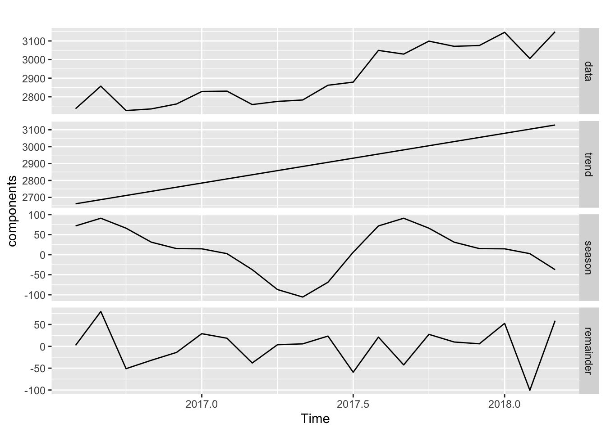
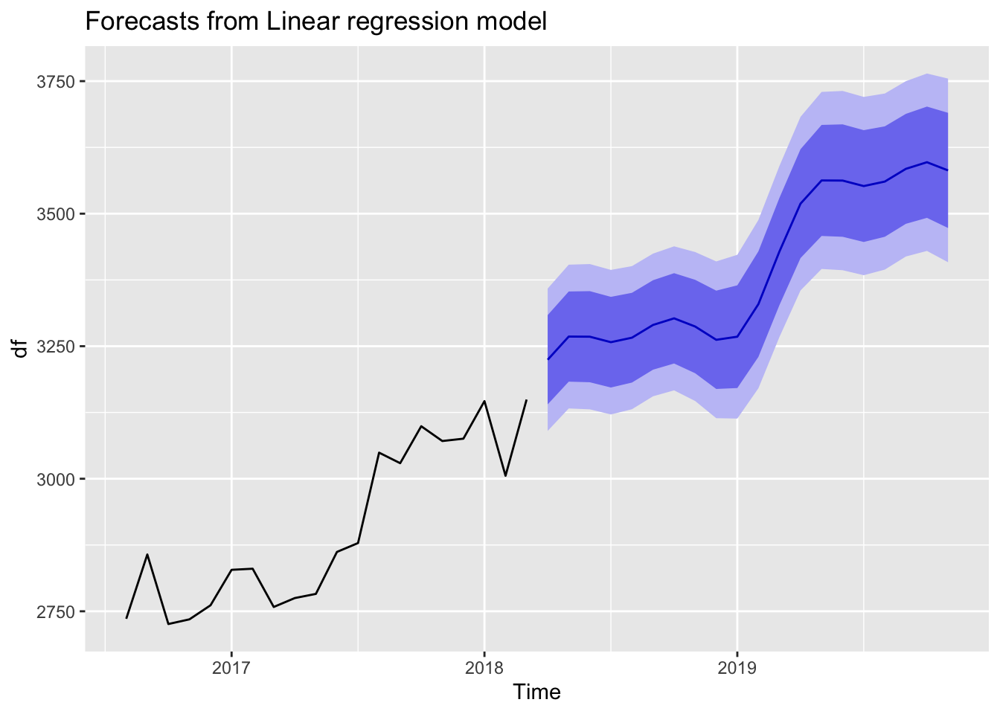

df <- ts(c(2735.869,2857.105,2725.971,2734.809,2761.314,2828.224,2830.284,
2758.149,2774.943,2782.801,2861.970,2878.688,3049.229,3029.340,3099.041,
3071.151,3075.576,3146.372,3005.671,3149.381), start=c(2016,8), frequency=12)I enjoy reading Rob Hyndman’s blog. The other day he did some analysis of a short times series. More about that is available at his blog here. The neat thing that he shows is that you don’t need a tremendous amount of data to decompose seasonality. Using fourier transforms1.
He sets up a small data set:
Which only has 20 months of data in it. He then applies a time series linear model with 2 sine/ cosine pair terms.
library(forecast)Registered S3 method overwritten by 'quantmod':
method from
as.zoo.data.frame zoo library(ggplot2)
decompose_df <- tslm(df ~ trend + fourier(df, 2))We can see the coefficients of the model here:
summary(decompose_df)
Call:
tslm(formula = df ~ trend + fourier(df, 2))
Residuals:
Min 1Q Median 3Q Max
-100.572 -33.513 5.743 24.430 79.728
Coefficients:
Estimate Std. Error t value Pr(>|t|)
(Intercept) 2637.357 24.862 106.080 < 2e-16 ***
trend 24.541 2.077 11.816 1.14e-08 ***
fourier(df, 2)S1-12 76.553 17.105 4.475 0.000523 ***
fourier(df, 2)C1-12 -4.281 17.105 -0.250 0.806010
fourier(df, 2)S2-12 36.931 16.203 2.279 0.038850 *
fourier(df, 2)C2-12 10.402 16.802 0.619 0.545780
---
Signif. codes: 0 '***' 0.001 '**' 0.01 '*' 0.05 '.' 0.1 ' ' 1
Residual standard error: 50.98 on 14 degrees of freedom
Multiple R-squared: 0.917, Adjusted R-squared: 0.8874
F-statistic: 30.94 on 5 and 14 DF, p-value: 4.307e-07From there tou can see the trends for each of the components.
trend <- coef(decompose_df)[1] + coef(decompose_df)['trend']*seq_along(df)
components <- cbind(
data = df,
trend = trend,
season = df - trend - residuals(decompose_df),
remainder = residuals(decompose_df)
)
autoplot(components, facet=TRUE)Warning in autoplot.mts(components, facet = TRUE): partial argument match of
'facet' to 'facets'
out <-forecast(decompose_df, newdata = df)Warning in forecast.lm(decompose_df, newdata = df): newdata column names not
specified, defaulting to first variable required.autoplot(out)
Footnotes
Reuse
Citation
BibTeX citation:
@online{dewitt2018,
author = {Michael DeWitt and Michael DeWitt},
title = {Analysis of {Short} {Time} {Series}},
date = {2018-07-19},
url = {https://michaeldewittjr.com/programming/2018-07-19-analysis-of-short-time-series},
langid = {en}
}
For attribution, please cite this work as:
Michael DeWitt, and Michael DeWitt. 2018. “Analysis of Short Time
Series.” July 19, 2018. https://michaeldewittjr.com/programming/2018-07-19-analysis-of-short-time-series.